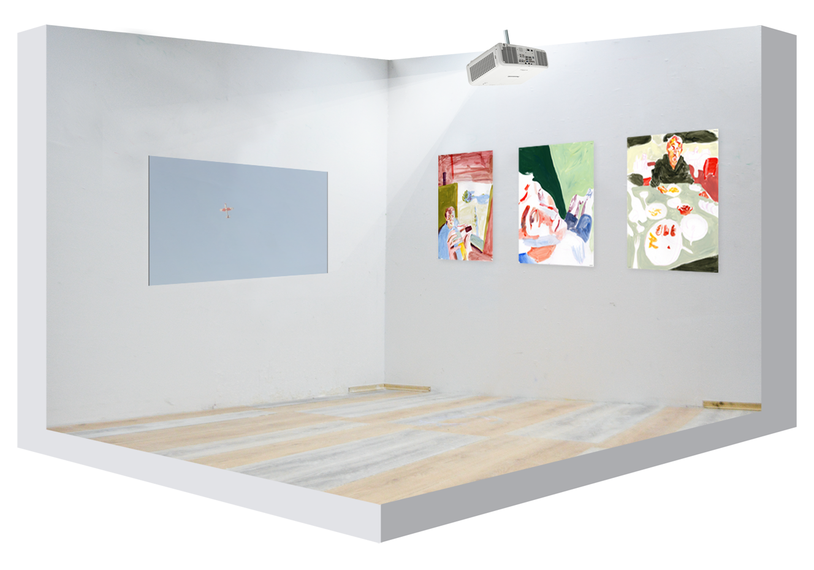
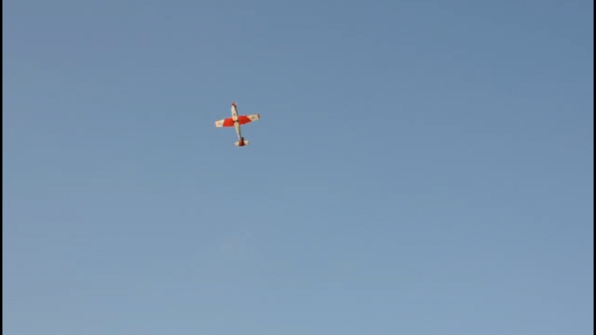
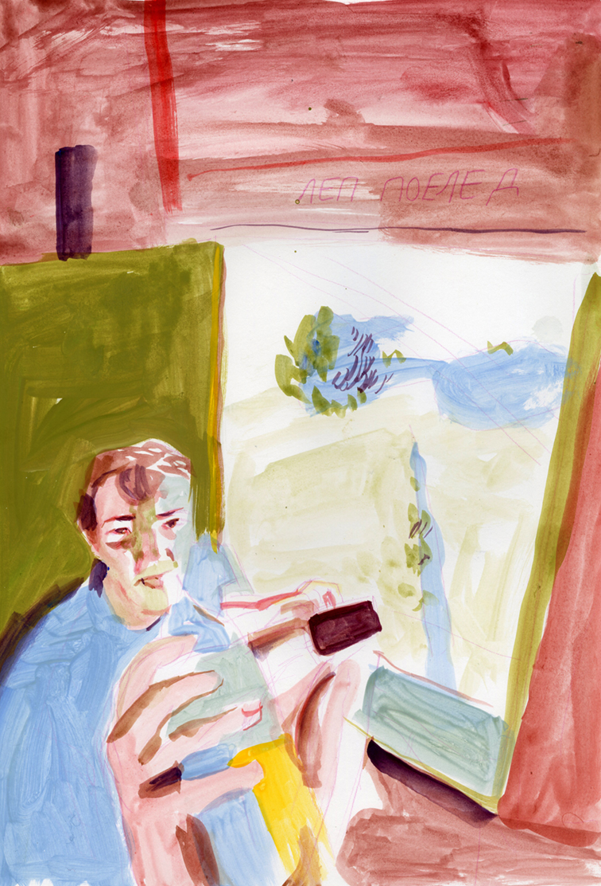
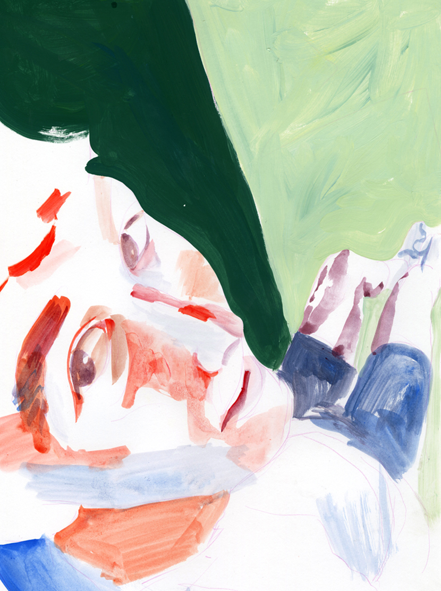
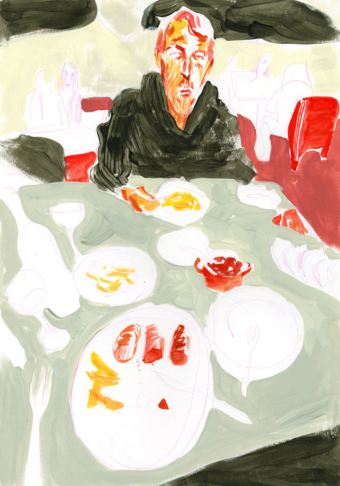

Henrik Olai Kaarstein & Markus Langen
On Holiday
Gennem væggen skinner himlen varm. Flyende fejer dagen. Himlens farve giver mig en træng til candy floss, heldigt at de lige i dag sælger det på hvert et gadehjørne. Fotografiernes farve afspejler ikke følelsen den feriedag. Huden husker ikke, var det Slovakiet, Serbien eller Sveits.
Videoen til Henrik Olai Kaarstein er optag fra et flyshow over Lake Zürich på den schweiziske nationaldag i 2013. De 3 billederne til Markus Langen skildre en selfi, en tog tur og en lunch, og er bearbejdelse af fotografier taget en sommerferie i Serbien.
-Thomas Bremerstent



Seals 4
video still
Henrik Olai Kaarstein
2013
Looped video projection
01:32 min

Hochsitz 1
Markus Langen
2021
Watercolors, gouache on paper
29.7 x 42 cm

Hochsitz 2
Markus Langen
2021
Watercolors, gouache on paper
29.7 x 42 cm

Restaurant
Markus Langen
2021
Watercolors, gouache, vinyl paint on paper
29.7 x 42 cm